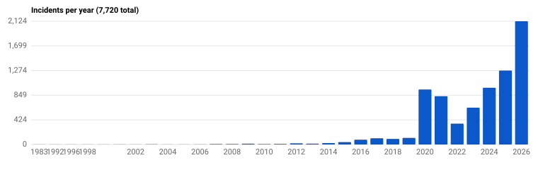
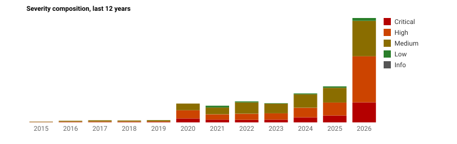
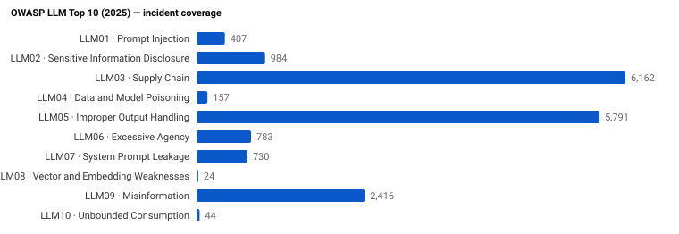
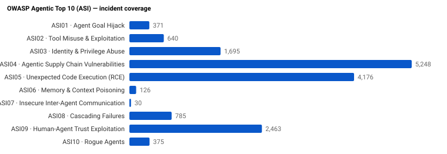

| Date | ID | Title | Severity | LLM | ASI | CVEs |
|---|
Searchable, filterable index of publicly disclosed GenAI and agentic-AI security incidents. Every entry is mapped to OWASP LLM Top 10 (2025), OWASP Agentic Top 10 (ASI), NIST AI RMF, and MITRE ATLAS.
GitHub repo · INCIDENTS.md · incidents.min.json · schema · cite




Loading…
| Date | ID | Title | Severity | LLM | ASI | CVEs |
|---|